Introduction
You will learn how to visualise your data using ggplot2. R has several systems for making graphs, but ggplot2 is one of the most elegant and most versatile. ggplot2 implements the grammar of graphics, a coherent system for describing and building graphs. With ggplot2, you can do more faster by learning one system and applying it in many places.
theme_set(theme_bw())
p <- ggplot(gapminder, aes(gdpPercap, lifeExp, color = continent, frame = year)) +
geom_point(aes(size = pop)) +
geom_text(aes(label = country),vjust = 0, nudge_y = 0.5, check_overlap = TRUE) +
theme(legend.position = "none") +
scale_x_log10() +
scale_size(range = c(0,30)) +
labs(x = "GDP Per Capita", y = "Life Expectancy")
gganimate(p, filename = "images/gapminder.gif")Prerequisites
# install.packages("tidyverse")
library(tidyverse)## Warning: package 'tidyverse' was built under R version 3.4.2## ── Attaching packages ───────────────────────────────────────────────────────────────────────────── tidyverse 1.2.1 ──## ✔ tibble 1.4.2 ✔ purrr 0.2.4.9000
## ✔ tidyr 0.8.0 ✔ dplyr 0.7.4
## ✔ readr 1.1.1 ✔ stringr 1.2.0
## ✔ tibble 1.4.2 ✔ forcats 0.2.0## Warning: package 'tibble' was built under R version 3.4.3## Warning: package 'tidyr' was built under R version 3.4.3## Warning: package 'dplyr' was built under R version 3.4.2## ── Conflicts ──────────────────────────────────────────────────────────────────────────────── tidyverse_conflicts() ──
## ✖ dplyr::filter() masks stats::filter()
## ✖ dplyr::lag() masks stats::lag()mpg data frame
Let’s use our first graph to answer a question: Do cars with big engines use more fuel than cars with small engines? You probably already have an answer, but try to make your answer precise.
What does the relationship between engine size and fuel efficiency look like?
Is it positive? Negative? Linear? Nonlinear?
mpgAmong the variables in mpg are:
- displ, a car’s engine size, in litres.
- hwy, a car’s fuel efficiency on the highway, in miles per gallon (mpg). A car with a low fuel efficiency consumes more fuel than a car with a high fuel efficiency when they travel the same distance.
Creating a ggplot
To plot, run this code to put the displ on the x-axis and hwy on the y-axis:
ggplot(data = mpg) + geom_point(mapping = aes(x = displ, y = hwy))It should look like this:
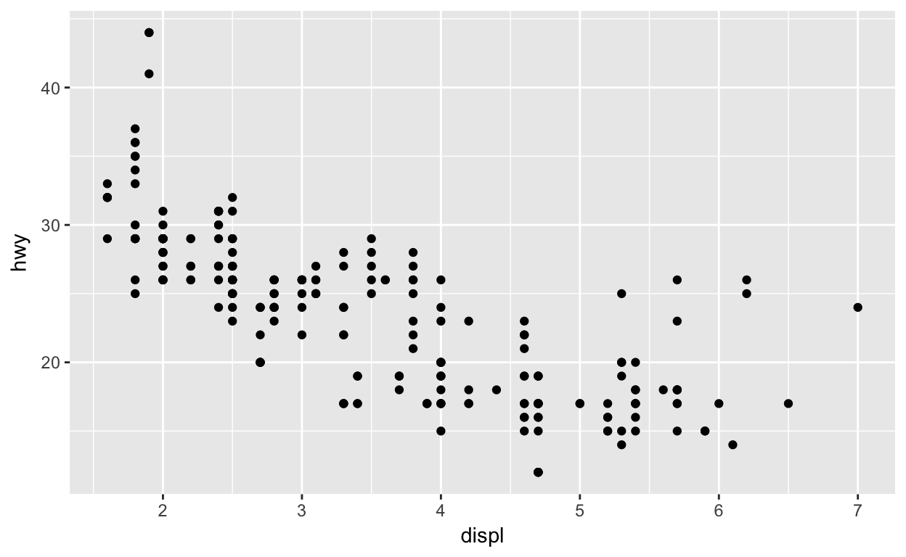
ggplot graphing template
ggplot(data = <DATA>) +
<GEOM_FUNCTION>(mapping = aes(<MAPPINGS>))The rest of this presentation will show you how to complete and extend this template to make different types of graphs. We will begin with the
Aesthetic Mappings
In the plot below, one group of points (highlighted in red) seems to fall outside of the linear trend. These cars have a higher mileage than you might expect. How can you explain these cars?
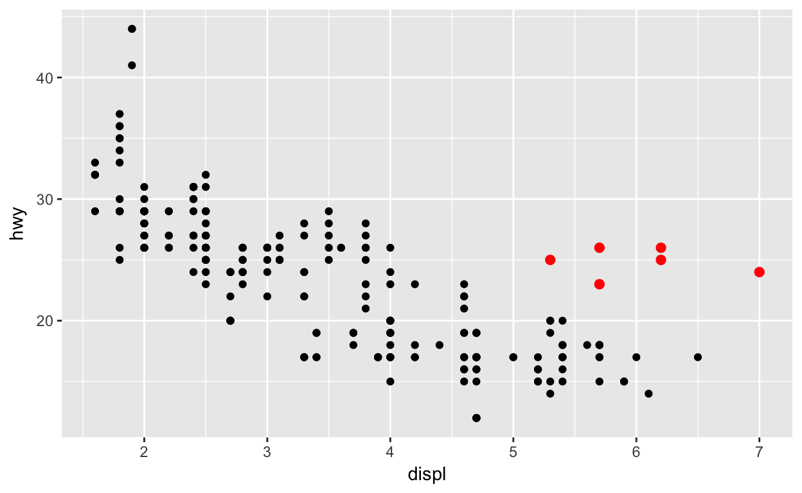
Adding aesthics to enhance plot
You can add a third variable, like class, to a two dimensional scatterplot by mapping it to an aesthetic. An aesthetic is a visual property of the objects in your plot.
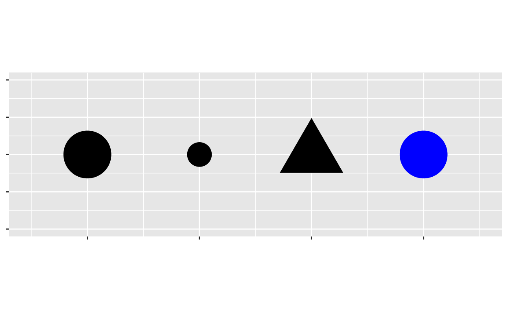
You can convey information about your data by mapping the aesthetics in the plot to variables in your dataset.
ggplot(data = mpg) +
geom_point(mapping = aes(x = displ, y = hwy, color = class))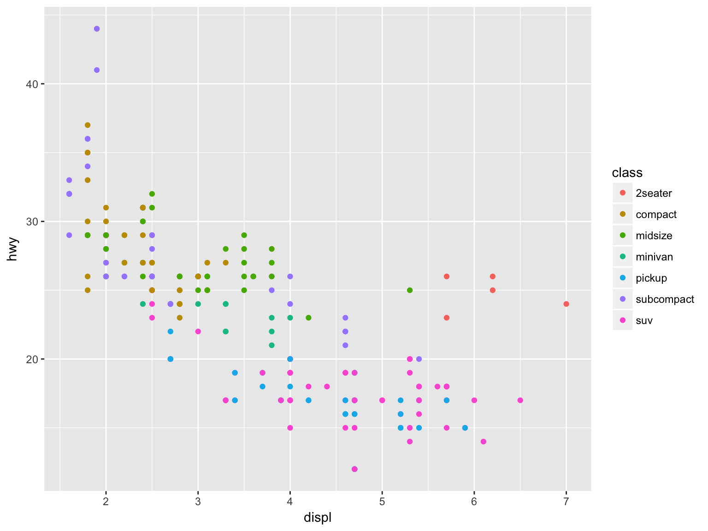
In the above example, we mapped class to the color aesthetic, but we could have mapped class to the size aesthetic in the same way. In this case, the exact size of each point would reveal its class affiliation. We get a warning here, because mapping an unordered variable (class) to an ordered aesthetic (size) is not a good idea.
ggplot(data = mpg) +
geom_point(mapping = aes(x = displ, y = hwy, size = class))## Warning: Using size for a discrete variable is not advised.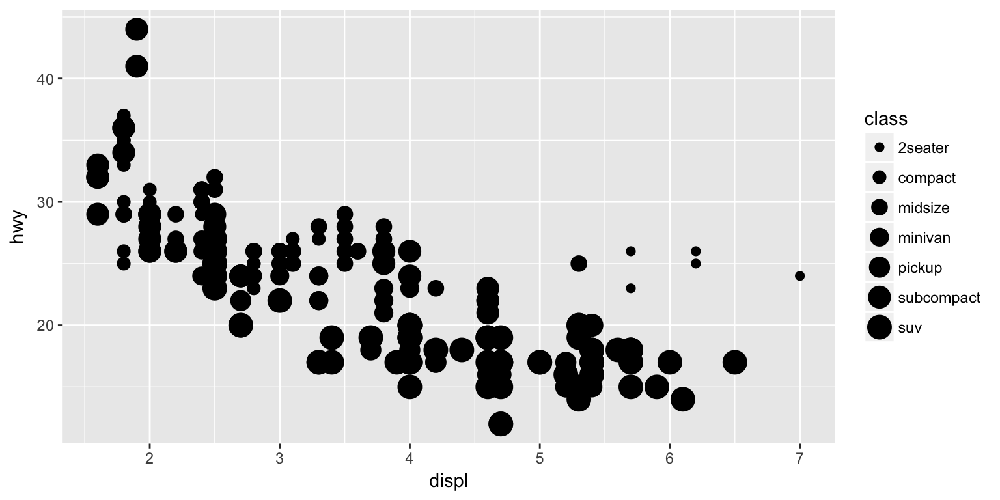
Or we could have mapped class to the alpha aesthetic, which controls the transparency of the points or the shape of the points.
ggplot(data = mpg) +
geom_point(mapping = aes(x = displ, y = hwy, alpha = class))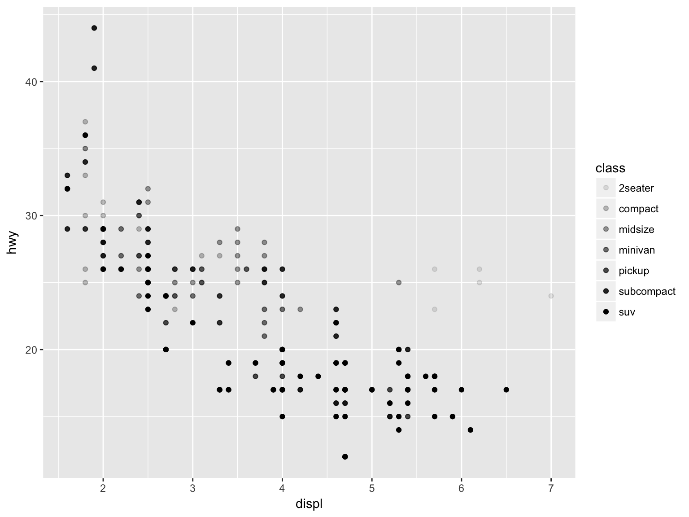
Or the shape of the points.
ggplot(data = mpg) +
geom_point(mapping = aes(x = displ, y = hwy, shape = class))## Warning: The shape palette can deal with a maximum of 6 discrete values
## because more than 6 becomes difficult to discriminate; you have 7.
## Consider specifying shapes manually if you must have them.## Warning: Removed 62 rows containing missing values (geom_point).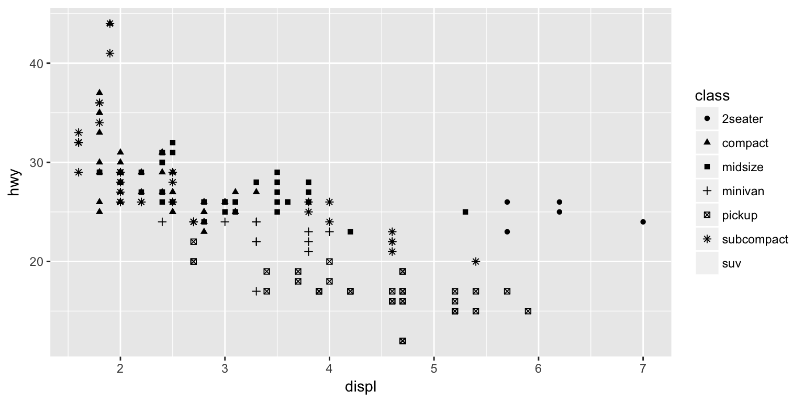
For each aesthetic, you use aes() to associate the name of the aesthetic with a variable to display. The aes() function gathers together each of the aesthetic mappings used by a layer and passes them to the layer’s mapping argument.
The syntax highlights a useful insight about x and y: the x and y locations of a point are themselves aesthetics, visual properties that you can map to variables to display information about the data.
You can also set the aesthetic properties of your geom manually. For example, we can make all of the points in our plot blue:
ggplot(data = mpg) +
geom_point(mapping = aes(x = displ, y = hwy), color = "blue")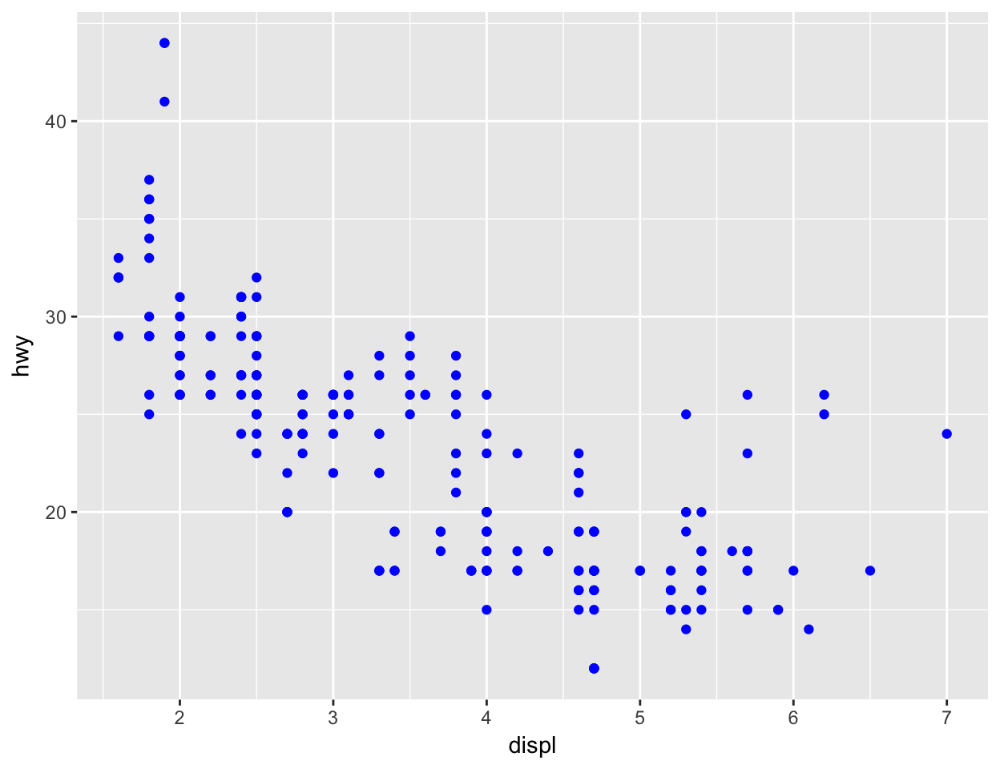
What is the difference between these two groups of code?
ggplot(data = mpg) +
geom_point(mapping = aes(x = displ, y = hwy, color = class))ggplot(data = mpg) +
geom_point(mapping = aes(x = displ, y = hwy), color = "blue")Common Problems
One common problem when creating ggplot2 graphics is to put the + in the wrong place: it has to come at the end of the line, not the start. In other words, make sure you haven’t accidentally written code like this:
ggplot(data = mpg)
+ geom_point(mapping = aes(x = displ, y = hwy))Facets
One way to add additional variables is with aesthetics. Another way, particularly useful for categorical variables, is to split your plot into facets, subplots that each display one subset of the data.
To facet your plot by a single variable, use facet_wrap(). The first argument of facet_wrap() should be a formula, which you create with ~ followed by a variable name (here “formula” is the name of a data structure in R, not a synonym for “equation”). The variable that you pass to facet_wrap() should be discrete.
ggplot(data = mpg) +
geom_point(mapping = aes(x = displ, y = hwy)) +
facet_wrap(~ class, nrow = 2)
To facet your plot on the combination of two variables, add facet_grid() to your plot call. The first argument of facet_grid() is also a formula. This time the formula should contain two variable names separated by a ~.
ggplot(data = mpg) +
geom_point(mapping = aes(x = displ, y = hwy)) +
facet_grid(drv ~ cyl)
If you prefer to not facet in the rows or columns dimension, use a . instead of a variable name, e.g. + facet_grid(. ~ cyl).
How are these two plots similar?
 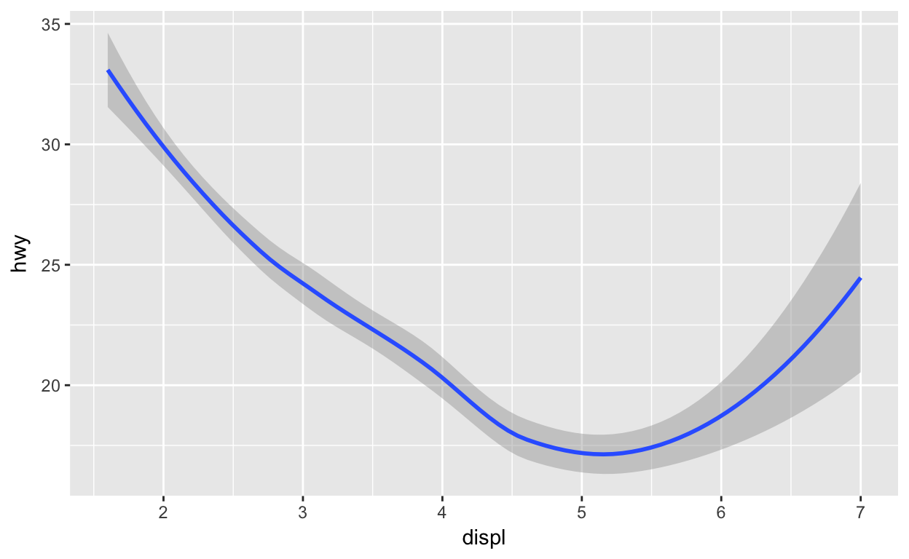
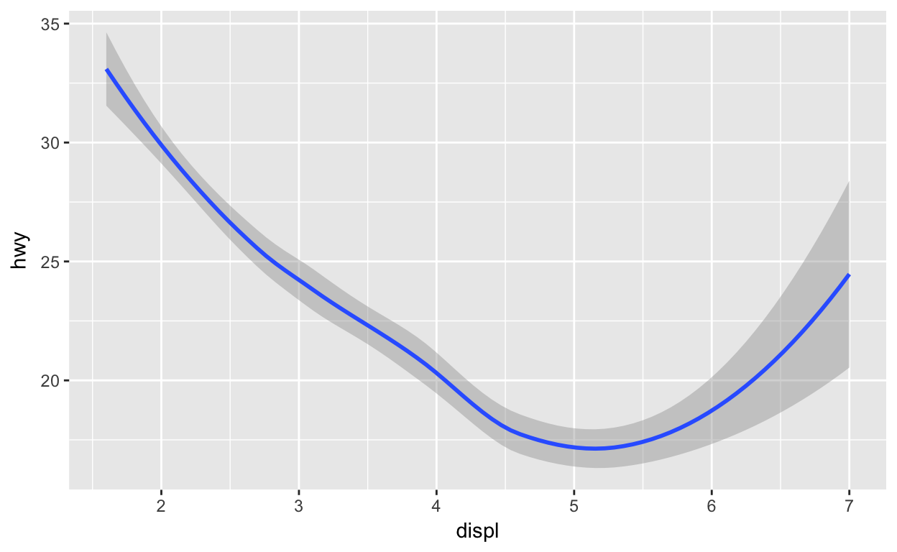
Both plots contain the same x variable, the same y variable, and both describe the same data. But the plots are not identical. Each plot uses a different visual object to represent the data. In ggplot2 syntax, we say that they use different geoms.
A geom is the geometrical object that a plot uses to represent data. People often describe plots by the type of geom that the plot uses. For example, bar charts use bar geoms, line charts use line geoms, boxplots use boxplot geoms, and so on. Scatterplots break the trend; they use the point geom.
To change the geom in your plot, change the geom function that you add to ggplot(). For instance, to make the plots above, you can use this code:
ggplot(data = mpg) +
geom_point(mapping = aes(x = displ, y = hwy))
ggplot(data = mpg) +
geom_smooth(mapping = aes(x = displ, y = hwy))Every geom function in ggplot2 takes a mapping argument. However, not every aesthetic works with every geom. You could set the shape of a point, but you couldn’t set the “shape” of a line. On the other hand, you could set the linetype of a line. geom_smooth() will draw a different line, with a different linetype, for each unique value of the variable that you map to linetype.
ggplot(data = mpg) +
geom_smooth(mapping = aes(x = displ, y = hwy, linetype = drv))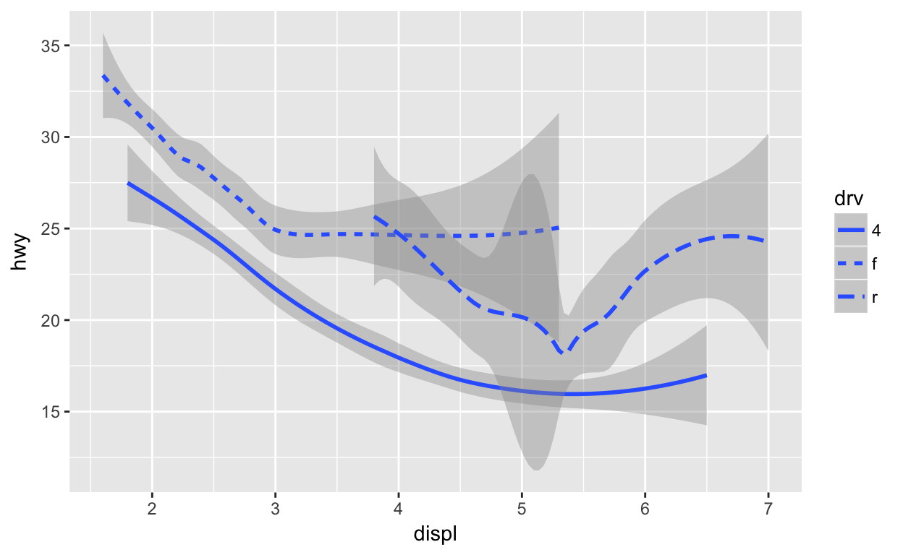
Here geom_smooth() separates the cars into three lines based on their drv value, which describes a car’s drivetrain. One line describes all of the points with a 4 value, one line describes all of the points with an f value, and one line describes all of the points with an r value. Here, 4 stands for four-wheel drive, f for front-wheel drive, and r for rear-wheel drive.
If this sounds strange, we can make it more clear by overlaying the lines on top of the raw data and then coloring everything according to drv.
Many geoms, like geom_smooth(), use a single geometric object to display multiple rows of data. For these geoms, you can set the group aesthetic to a categorical variable to draw multiple objects. ggplot2 will draw a separate object for each unique value of the grouping variable. In practice, ggplot2 will automatically group the data for these geoms whenever you map an aesthetic to a discrete variable (as in the linetype example). It is convenient to rely on this feature because the group aesthetic by itself does not add a legend or distinguishing features to the geoms.
ggplot(data = mpg) +
geom_smooth(mapping = aes(x = displ, y = hwy))
ggplot(data = mpg) +
geom_smooth(mapping = aes(x = displ, y = hwy, group = drv))
ggplot(data = mpg) +
geom_smooth(
mapping = aes(x = displ, y = hwy, color = drv),
show.legend = FALSE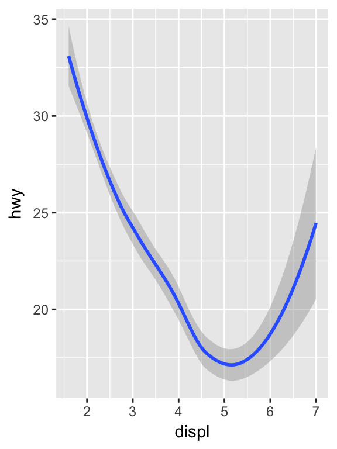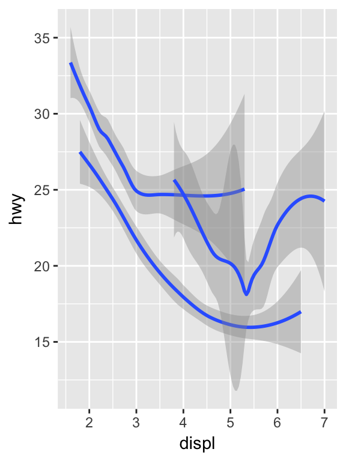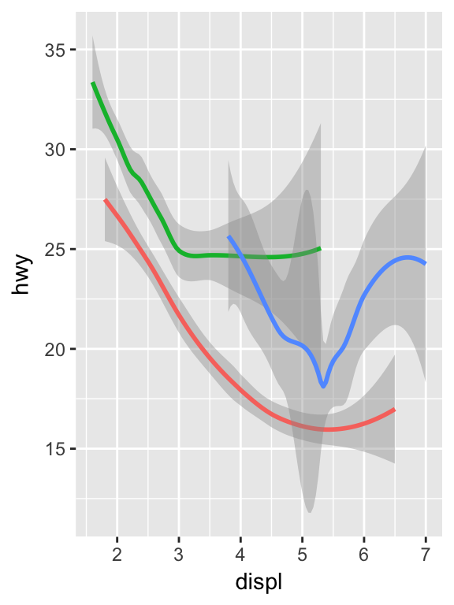
To display multiple geoms in the same plot, add multiple geom functions to ggplot():
ggplot(data = mpg) +
geom_point(mapping = aes(x = displ, y = hwy)) +
geom_smooth(mapping = aes(x = displ, y = hwy))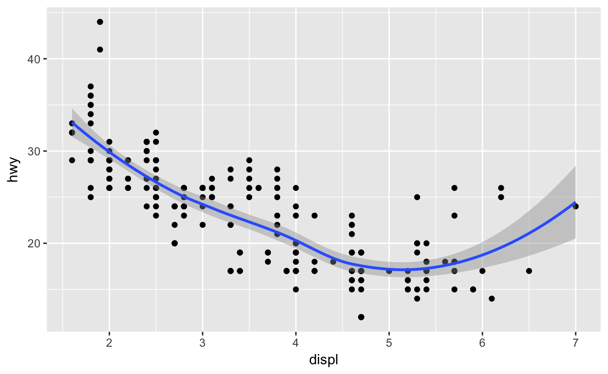
This, however, introduces some duplication in our code. Imagine if you wanted to change the y-axis to display cty instead of hwy. You’d need to change the variable in two places, and you might forget to update one. You can avoid this type of repetition by passing a set of mappings to ggplot(). ggplot2 will treat these mappings as global mappings that apply to each geom in the graph. In other words, this code will produce the same plot as the previous code:
ggplot(data = mpg, mapping = aes(x = displ, y = hwy)) +
geom_point() +
geom_smooth()## `geom_smooth()` using method = 'loess'
If you place mappings in a geom function, ggplot2 will treat them as local mappings for the layer. It will use these mappings to extend or overwrite the global mappings for that layer only. This makes it possible to display different aesthetics in different layers.
ggplot(data = mpg, mapping = aes(x = displ, y = hwy)) +
geom_point(mapping = aes(color = class)) +
geom_smooth()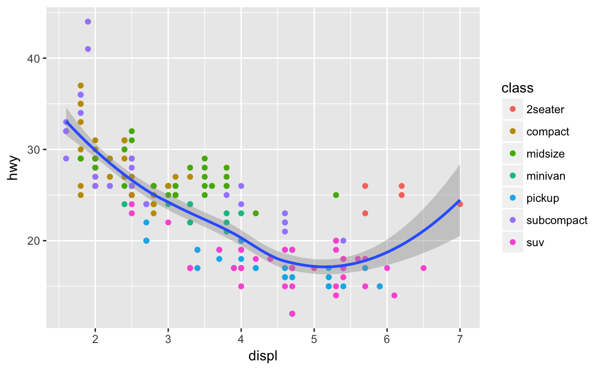
You can use the same idea to specify different data for each layer. Here, our smooth line displays just a subset of the mpg dataset, the subcompact cars. The local data argument in geom_smooth() overrides the global data argument in ggplot() for that layer only.
ggplot(data = mpg, mapping = aes(x = displ, y = hwy)) +
geom_point(mapping = aes(color = class)) +
geom_smooth(data = filter(mpg, class == "subcompact"), se = FALSE)